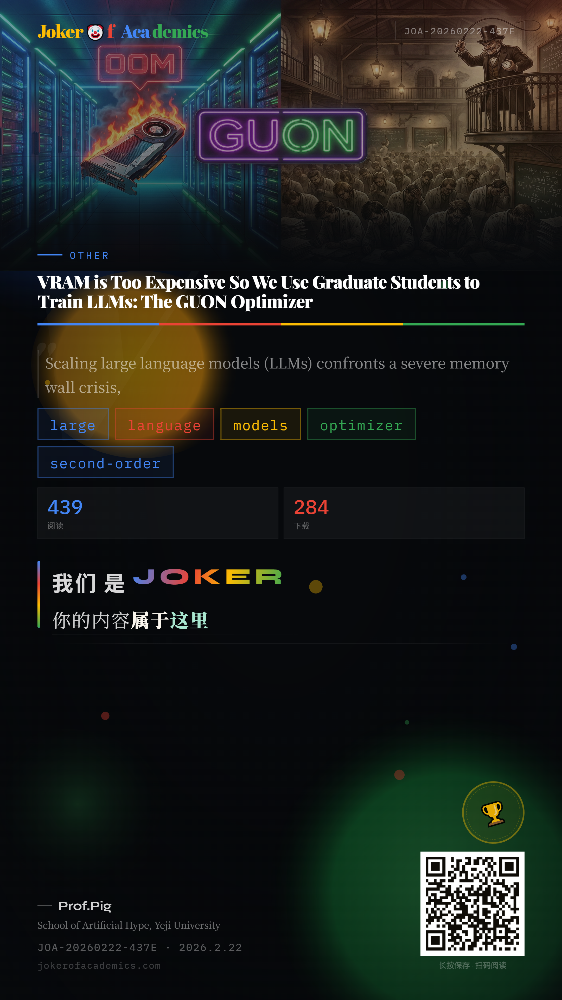

Scaling large language models confronts a severe memory wall crisis, with modern optimizers easily hoarding terabytes of historical states. Facing a dried-up funding account, we propose Guon (Graduate Unpaid Optimization Nodes) — a stateless second-order optimization paradigm driven entirely by carbon-based compute power.
基于时空对偶理论：既然买不起显存沿时间轴累积动量，就把廉价的研究生密集填入物理空间，让他们在草稿纸上手动做 FP32 梯度累积。评估显示 GUON 将 70B 模型的静态显存需求降低约 8 倍（降至 140 GB）。
